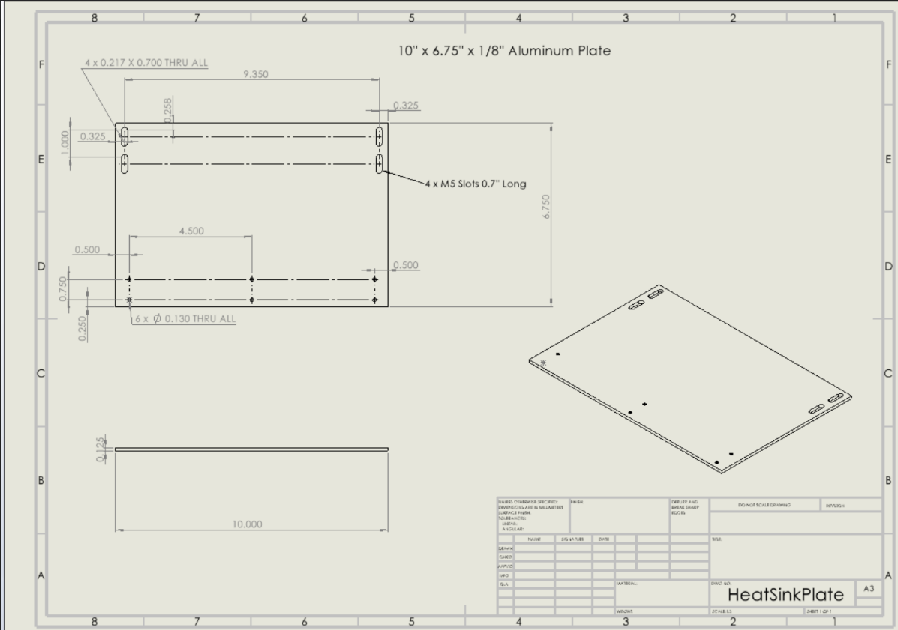
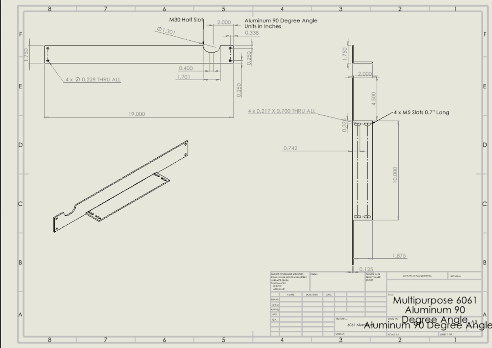
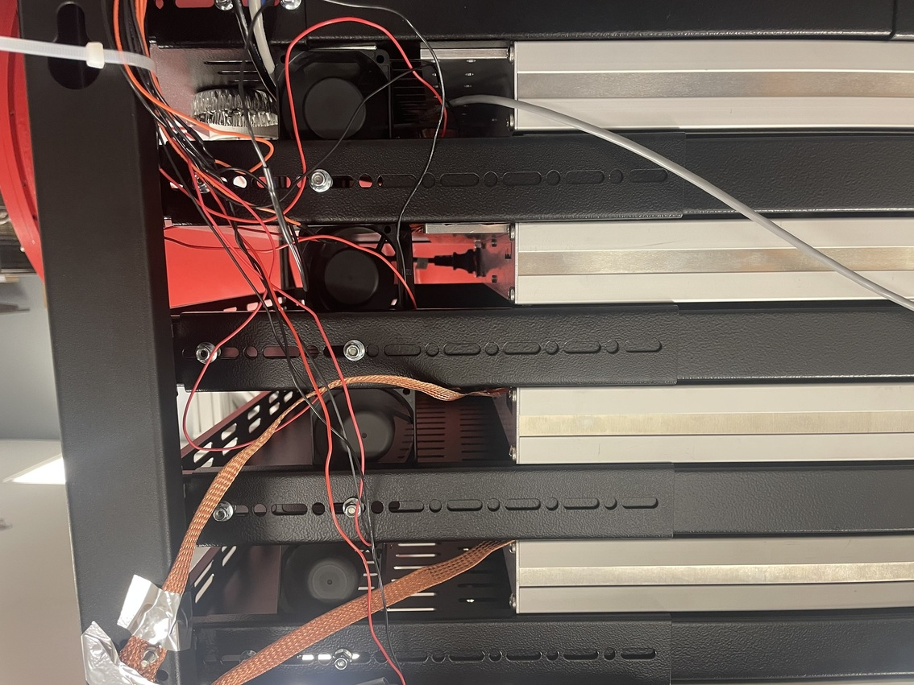
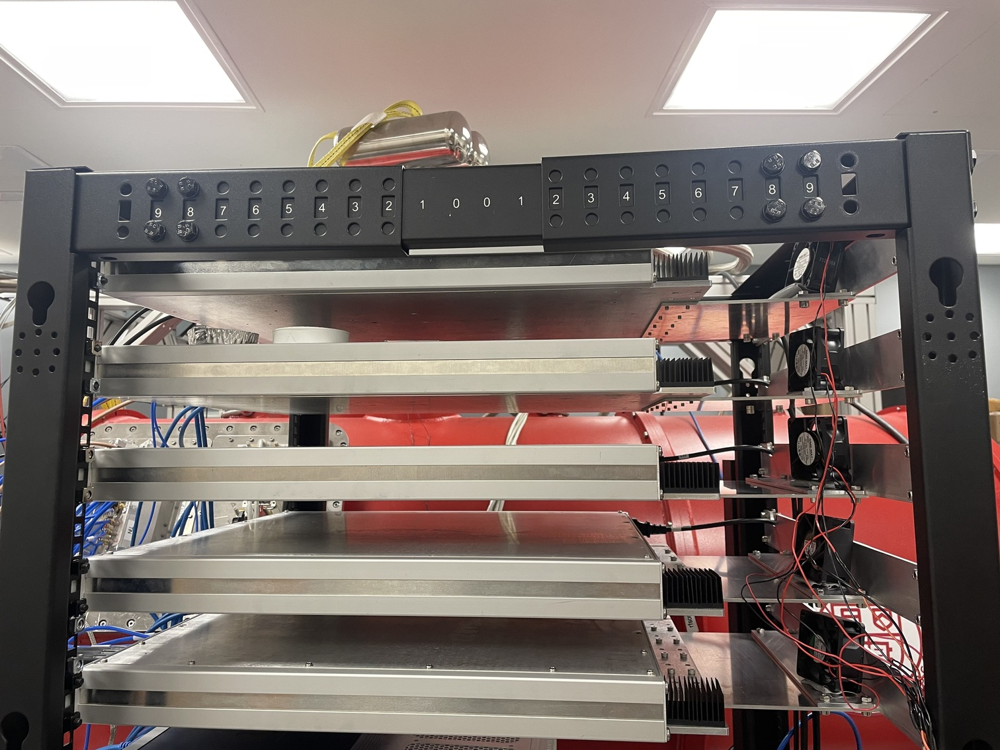

RFSoC Hardware Thermal Management
Keywords: SolidWorks | Thermal Management | Heatsink Design | CCAT Observatory
Introduction to the Thermal Challenge
The Fred Young Submillimeter Telescope (FYST) is a major international collaboration located on Cerro Chajnantor in the Atacama Desert in Chile. While the observatory is deployed in South America, its primary camera component, PrimeCam, was assembled at Cornell University. Working with the Niemack Group, I collaborated with a cross-functional team to assemble and test PrimeCam's complex hardware architecture.
PrimeCam utilizes state of the art Kinetic-Inductance Detectors (KIDs) that require an extreme base thermal level of less than 100 millikelvin (-273.05°C). To interface with these detectors, the lab utilizes Radio Frequency System-on-Chip (RFSoC) technology, which is capable of processing and monitoring thousands of individual KID channels simultaneously. PrimeCam will ultimately use roughly 25 of these RFSoCs to manage the KIDs inside the telescope.
During the testing phase of a scaled-down version of the camera called ModCam, which utilized only five RFSoCs, we encountered a critical thermal bottleneck. The RFSoCs were organized directly on top of one another on rack shelves. This caused severe heat build-up, pushing hardware temperatures to a dangerous 90°C. In the long term, these thermal extremes would permanently damage the components, and replacing them at the high-altitude Atacama site would be a logistical challenge. While a temporary fan system successfully brought temperatures down, a sustainable, passive cooling solution was required for the final deployment.
Mechanical & Thermal Design
The root of the problem was the existing rack shelving, which severely restricted airflow between the RFSoCs and was coated in a paint that insulated rather than conducted heat. To solve this, I designed a completely custom RFSoC mount in SolidWorks. Rather than resting the units on a shelf, the new mount integrated directly with the RFSoC to save vertical space. The custom bracket secured to the back of the RFSoC and mounted directly to the rack, utilizing the hardware's existing front-screw layout.


To maximize passive cooling, I included heatsink fins that can attach directly on the RFSoCs. This optimized thermal dissipation and spread the heat through the rack without relying entirely on active fan cooling. I also incorporated a specialized notch at the rear of the mount to cleanly and safely route the heavy power cables required by the RFSoCs.
Implementation and Results
The new structural design was highly successful, dropping the RFSoC baseline temperatures significantly to approximately 60°C. When paired with the existing fan system, the operating temperatures dropped even further, providing a safe, long-term thermal baseline that ensures hardware survivability in the field.


This project presented unique mechanical engineering challenges compared to my previous work. Because there were no pre-existing CAD files for the server rack or the RFSoCs readily available, I could not build upon previous models. Instead, I had to take precise manual measurements and build the digital models entirely from scratch in SolidWorks. Ultimately, this experience deepened my understanding of effective thermal management, spatial constraints, and the practical engineering of custom heatsinks.